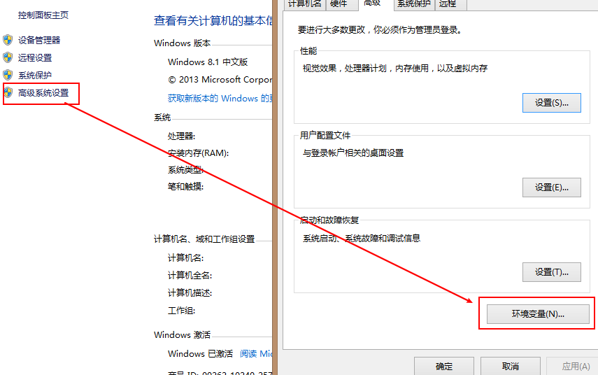
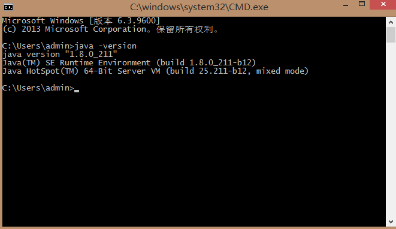
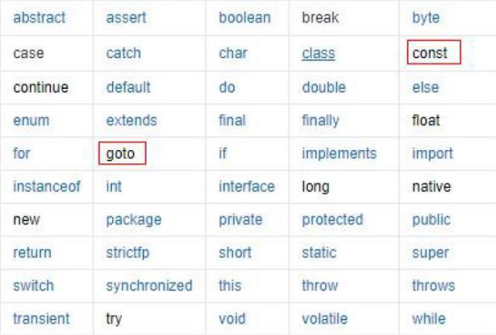

java按照技术标准和应用场景的不同分为三类，分别是JAVASE、JAVAEE、JAVAME
二 、java语言的发展史
java语言几个比较重要的时间点：
三、java的开环境中jdk jre jvm三者之间的关系
四、字节和换算关系
字节是计算机存储的最小存储单元(byte),8个bit为一个字节
8 bit = 1 byte（B）
1024 byte = 1 KB
1024 KB = 1 MB
1024 MB = 1 GB
1024 GB = 1TB
五、常用的DOS命令
| 操作 | 命令 |
| 切换盘符 | 盘符名： |
| 查看当前文件夹的内容 | dir |
| 进入文件夹 | cd 文件夹名 |
| 退出文件夹 | cd .. |
| 退出到磁盘根目录 | cd \ |
| 清屏 | cls |
六、 环境变量的设置
在进行开发的之前要进行环境变量的设置，鼠标在我的电脑右键--》属性 --》高级系统设置--》环境变量

配置变量名为 ： JAVA_HOME
变量值为 ： jdk的安装路径
2.在path中进行变量的配置： %JAVA_HOME%bin;
环境变量配置完成之后可以在DOS命令况下输入java -version进行确认如果出现下图所示，即配置成功
七、程序开发的三个步骤：
八、关键字
java程序中已经定义好的，具有特殊含义的单词，具有特殊的含义。
在代码的编写当中，不可以使用关键字定义类名、方法名、变量名

九、相关概念解析
标识符：java程序中类名，变量名，方法名称取名字的规范。也就是在程序当中，我们自己定义的名字，比如类的名字，方法的名字或者变量的名字，等都叫做标识符。
命令必须满足的规范：
软性要求：
常量：常量是指在java程序中固定不变的数据，常量一旦确定了值就无法改变。具有唯一性。
变量：变量是内存中的一小块区域，其值可以在一定范围内进行变化。java中要求一个变量每次只能保存一个数据，必须要明确保存的数据类型。java是一种强语言类型。